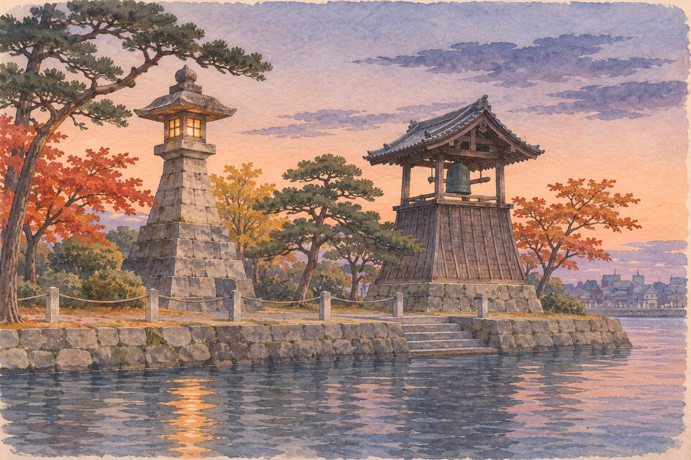
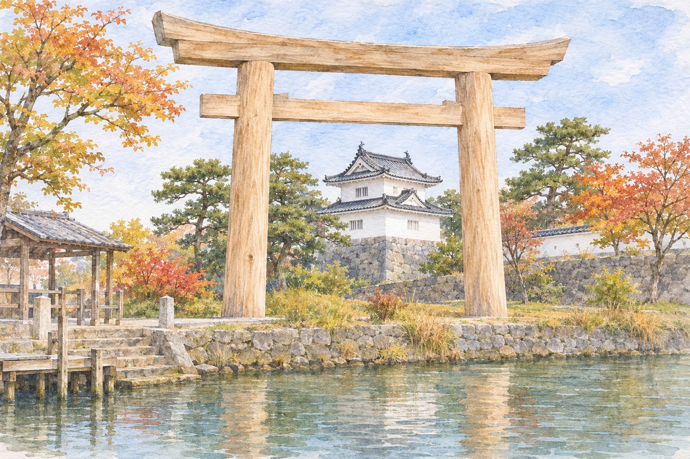

Atsuta, Nagoya → Kuwana, Mie · any season · a day on both shores
The Only Stretch of the Tōkaidō at Sea
Edo's great road to Kyoto had one gap that walking could not cross. From a stone lantern ten minutes from Atsuta Shrine, travellers took a boat for seven ri, about 27.5 km, to Kuwana, and stepped off under a torii that still comes from Ise every twenty years.
宮の渡し · 七里の渡し · Miya no Watashi · Shichiri no WatashiNagoya · KuwanaFacts checked November 2026
You have probably done Atsuta Shrine (熱田神宮) on a Nagoya stopover: the cedars, the sword, a bowl of hitsumabushi. Most people walk back to Jingū-mae Station from there. Walk the other way, south-west, for a few minutes, and you reach a small park with a stone lantern, a bell tower and a short jetty on a river bank. That was the busiest ferry dock on the Tōkaidō.
Hiroshige drew this spot. His Tōkaidō series include prints of Miya (宮), the post town at Atsuta, with boats and a torii at the water's edge. The difference between that print and the park is the story here: the sea has gone, and the crossing that started from this lantern no longer exists. What you trade for the shrine-and-eel afternoon is a quiet riverside with almost nothing to buy. What you get is the one place where the Tōkaidō turns into a sea lane, and a reason to go on to the far shore.
A highway with a boat in it東海道唯一の海路 · Tōkaidō yuiitsu no kairo
When the Tokugawa fixed the Tōkaidō's post stations in 1601, the leg between Miya, the 41st station, and Kuwana (桑名), the 42nd, was set as a crossing by boat of seven ri. Nagoya City's Atsuta ward history page notes that the sea route was already in use in the Kamakura and Muromachi periods, and that "seven ri" was a common name rather than a measurement: about 27.5 km, at the old ri of roughly 3.9 km.
The city page gives the crossing as four to six hours if all went well; Mie Prefecture's material says about three hours normally and up to six depending on the tide, and that boats did not run in bad weather. A 1711 fare table on the city page lists 45 mon for a passenger, 100 for a horse-load of baggage and 123 for a horse with its handler.
There was an alternative. Travellers who did not want the sea, or could not face it, could take the Saya road (佐屋街道) overland to Saya and then a boat to Kuwana from there. The city says it was also called the Himekaidō (姫街道), the "princesses' road", because so many women and children used it. Look at the map: even the land route ended in a boat. The Kiso, Nagara and Ibi rivers (木曽三川) meet the sea between Owari and Ise, and none of the sources checked here say why that gap was never bridged, so this article will not guess.
Two ways from Miya to Kuwana, and both of them end on the water: the three rivers sit in between.
Miya no Watashi Park宮の渡し公園 · Miya no Watashi Kōen
The park is the old landing place, laid out as a small history park with the lantern, the bell tower and a little jetty. Miya was one of the largest post towns on the road: in 1843 it had two honjin (inns for lords), one waki-honjin and 248 ordinary inns, according to Nippon Tabi Magazine's summary.
The lantern (常夜灯, jōyatō) was the landmark boats steered for. Aichi's tourism site says the first one was built in 1625 by Naruse Masatora, was blown down and rebuilt, burned, and that the one you see is a 1955 reconstruction. The bell tower (時の鐘, toki no kane) is also a copy: the prefecture says the original bell was cast in 1676 on the orders of Tokugawa Mitsutomo, and the tower was rebuilt in the park in 1983. The old bell itself is kept at Sōfuku-ji temple. One Japanese travel guide says the bell is still rung at 8:00, noon and 18:00; no official source confirmed that for this article.
Nearby, the Niwa house (丹羽家住宅), an inn-family house of the post town, still stands. It is a private home: you can see the front, not the inside. And the restaurant Atsuta Hōraiken (あつた蓬莱軒), known for hitsumabushi, stands on the site of the post town's jin'ya, the local administrative office.
Getting there: Denmachō Station (伝馬町駅, Meijō subway line), exit 4, 7–8 minutes' walk south-west. Address: Uchida-chō, Atsuta-ku (熱田区内田町).
When: Open at all times, free.
Reality check: It is a small park. Twenty minutes is enough unless you sit by the water. Parking information conflicts between sources; come by subway.

AI-generated illustration — not an on-site photograph. An imagined scene inspired by this section, not an accurate depiction of the real place, objects or event.
The lantern has not moved. The sea has: the water in front of it now is a river mouth, not the bay.
Where the water went堀川 · Horikawa
Stand at the jetty and the water you are looking at is the Hori River (堀川), at the point where the Shin-Hori River (新堀川) joins it. Nagoya City's river material describes this confluence as the old shoreline, the departure point of the Tōkaidō's only sea route, and says that land reclamation for new rice fields and the port shaped what is here now. The Atsuta ward page is blunter: the coast has been filled in to a degree you could not imagine from Edo-period maps. In 1907 Atsuta Port was renamed Nagoya Port.
No boat leaves from here today. Aichi's site says so directly. If you want to reach the other end of the crossing, you take the train.
Getting there: The jetty is inside Miya no Watashi Park, at the confluence described above.
When: Any time. Evening is when the lantern and bell tower are lit, according to the Nagoya visitors' bureau.
Reality check: There is no ferry, no cruise from this jetty and no view of the open sea.
The far shore: Kuwana七里の渡跡 · Shichiri no Watashi-ato
Kuwana's landing site is on the river bank in Senba-chō (船馬町), about 20 minutes' walk from Kuwana Station. Here the story is not the lantern but the gate. The big torii at the landing is called the "first torii of Ise Province" (伊勢国一の鳥居, Ise no kuni ichi no torii), because travellers who stepped off the boat were on the road to the Ise shrines.
Kuwana City's own announcement of its last rebuilding explains where the torii comes from: it is the outer torii of the Uji Bridge (宇治橋) at Ise Jingū, handed on to Kuwana and rebuilt here every twenty years in step with the shrine's rebuilding cycle. A torii first stood here in the Tenmei era (1781–1789), and the custom of moving the Uji Bridge torii here began after the Meiji period, according to Nippon Tabi Magazine. The last rebuilding was celebrated on 31 May 2015, with a festival in which the timber, about 300 years old and 7.4 m long, was pulled through town on a cart borrowed from Ise.
Next to it is Banryū Yagura (蟠龍櫓), a watchtower that looks like part of Kuwana Castle. It is an exterior reconstruction built in 2003, and the building is in fact a Ministry of Land, Infrastructure and Transport floodgate control station: the ground floor runs the gates, and the upper floor is an observation room.
Getting there: Kintetsu Nagoya Station (近鉄名古屋駅) → Kuwana Station (桑名駅), Kintetsu Nagoya Line express, about 24 minutes, ¥530 (2026 route search). Then about 20 minutes' walk east to the river.
When: The landing site and torii are outdoors and open at any time.
Reality check: There is no dedicated parking at the site, according to one guide. Opening hours for the Banryū Yagura observation room were not confirmed; check before you go.

AI-generated illustration — not an on-site photograph. An imagined scene inspired by this section, not an accurate depiction of the real place, objects or event.
The gate at the end of the sea crossing is a used part of Ise, and gets replaced when Ise replaces its own.
The crossing in time年表 · nenpyō
The lantern and bell you see at Miya date from after 1950. The sea lane it served ran for more than 250 years before that.
If you get lost between the subway and the river, the sign you want reads 宮の渡し. To ask:
宮の渡しはどっちですか (Miya no Watashi wa dotchi desu ka). Say it to anyone near Denmachō Station; the name is known locally.
The honest part
There is not much to see. Both ends are small riverside sites with reconstructed structures. The lantern and the bell at Miya are copies from 1955 and 1983, the Kuwana tower is a floodgate office dressed as a castle turret, and the sea you came to imagine is out of sight behind reclaimed land. If you need a building or a museum to make a trip worth it, this is not the trip.
What is real is the alignment: the lantern is where it was, the torii is where travellers landed, and the train between them crosses the same three rivers the boats went round by sea. That is the whole pleasure, and you have to bring some of it yourself, ideally with a Hiroshige print on your phone.
Some details here rest on one source: the 1625 date for the first lantern (Aichi's tourism site) and the bell's ringing times (one travel guide). Opening hours for Banryū Yagura's observation room were not found.
If you only have one day
Both shores, from Nagoya Station, back by late afternoon.
Meitetsu to Jingū-mae Station (神宮前駅). Atsuta Shrine is about 3 minutes' walk.
Walk south-west through the old post town to Miya no Watashi Park. Stand at the lantern with Hiroshige's "Miya" open on your phone.
Early hitsumabushi at Atsuta Hōraiken, on the post-town office site. Expect a queue.
Subway from Denmachō Station back to Nagoya Station, then the Kintetsu express to Kuwana, about 24 minutes.
Walk from Kuwana Station to the Shichiri no Watashi landing, about 20 minutes. The torii, the river, Banryū Yagura.
Walk back to Kuwana Station and return to Nagoya.
Running late? Skip lunch at Atsuta and eat in Kuwana, which is known for its clams. Do not skip the torii; it is the reason the crossing has an end.